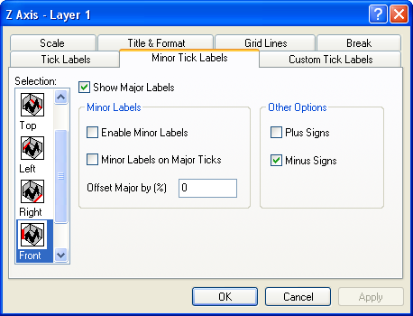

Inhalt |
| Horizontal |
Standardmäßig ist dies die untere und obere X-Achse. Wenn Sie allerdings die X- und Y-Achsen vertauscht haben (Grafik: X-Y-Achsen vertauschen) oder Sie die Achse eines Balken-, Fließendem Balken- oder Gestapeltem Balkendiagramm bearbeiten, ist das horizontale Symbol mit der linken und rechten Y-Achse verbunden. |
|---|---|
| Vertikal |
Dies ist standardmäßig die linke und rechte Y-Achse. Wenn Sie allerdings die X- und Y-Achsen vertauscht haben (Grafik: X-Y-Achsen vertauschen) oder Sie die Achse eines Balken-, Fließendem Balken- oder Gestapeltem Balkendiagramm bearbeiten, ist das vertikale Symbol mit der linken und rechten X-Achse verbunden. |
| Z-Achsen |
Dies sind standardmäßig die vordere und hintere Z-Achse. |
| Unten |
Dies ist standardmäßig die untere X-Achse (außer die X- und Y-Achse wurden vertauscht oder wenn Sie Balkendiagramme bearbeiten). |
| Oben |
Dies ist standardmäßig die obere X-Achse (außer die X- und Y-Achse wurden vertauscht oder wenn Sie Balkendiagramme bearbeiten). |
| Links |
Dies ist standardmäßig die linke Y-Achse (außer die X- und Y-Achse wurden vertauscht oder wenn Sie Balkendiagramme bearbeiten). |
| Rechts |
Dies ist standardmäßig die rechte Y-Achse (außer die X- und Y-Achse wurden vertauscht oder wenn Sie Balkendiagramme bearbeiten). |
| Vorne |
Dies ist standardmäßig die vordere Z-Achse. |
| Hinten |
Dies ist standardmäßig die hintere Z-Achse. |
Nachdem Sie die Bearbeitung der Achseneigenschaften abgeschlossen haben, können Sie jede beliebige andere Achse in Ihrem Diagramm bearbeiten, indem Sie das entsprechende Symbol im Listenfeld Auswahl auswählen. Um zu verhindern, dass Ihre Auswahl auf das Diagramm angewendet wird, klicken Sie auf die Schaltfläche Abbrechen zu jeder beliebigen Zeit während des Bearbeitungsprozesses (aber vor dem Klicken auf Anwenden).
Um kleine Hilfsstrichbeschriftungen anzuzeigen, müssen große Hilfsstrichbeschriftungen angezeigt werden.
Aktivieren Sie das Kontrollkästchen Zeige Beschriftung, um diese anzuzeigen. Andere Anzeigeeinstellungen für große Hilfsstrichbeschriftungen befinden sich auf der Registerkarte Beschriftung Hilfsstriche und auf der Registerkarte Benutzerdefinierte Beschriftung.
Aktivieren Sie das Kontrollkästchen Beschriften, um kleine Hilfsstrichbeschriftungen anzuzeigen.
Wählen Sie Doppelte Beschr. bei Hilfsstrichen, um sowohl eine kleine Hilfsstrichbeschriftung als auch eine große Hilfsstrichbeschriftung für jeden großen Hilfsstrich anzuzeigen. Diese Option ist nur für Zeitdatenbeschriftungen von Bedeutung, in denen Sie verschiedene Typen für Hilfsstrichbeschriftungen für große und kleine Hilfsstrichmarkierungen festlegen. Zum Beispiel Monat und Tag
Um beide Beschriftungen im Diagramm anzuzeigen, geben Sie einen Wert in das Textfeld Verschiebung (%) ein. Die großen Hilfsstrichbeschriftungen verschieben sich um die angegebene Distanz weg vom Mittelpunkt der Seite in Prozent der Schriftgröße.